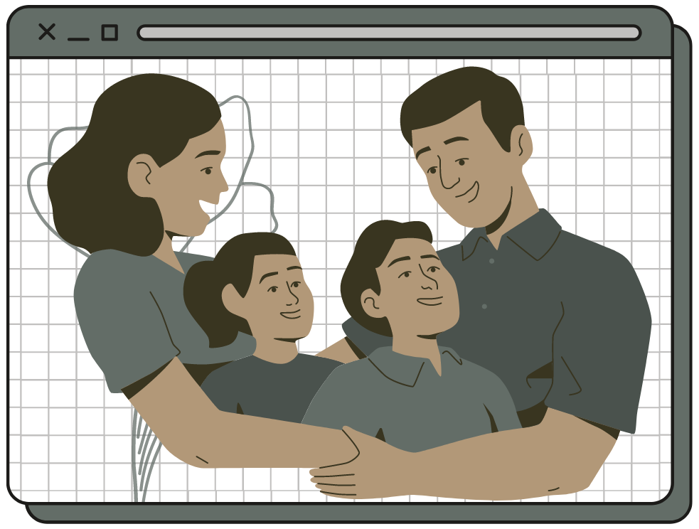

Lesson 1: Setting Up My Priorities
| Representation / Picture | Description / Explanation |
|---|---|
|  |
This pandemic has definitely taught me that I should set my priorities straight and that I should figure out what truly matters to me. If one thing good came out of the pandemic, An anecdote of this is how I spent more time with my family and how I got closer with them since we all live in the same house. Sometimes, we get so caught up with trivial things that we forget to remember what really matters to us but because of quarantine, I got to reflect on things that mattered to me like my family and friends. I was so scared that I might lose some of these things that it finally occurred to me that I should spend more time with the people and activities that I find to be the most important. The pandemic has made me realize that I shouldn’t spend my time doing trivial things and I should take care of my time wisely. Now, instead of scrolling on social media, I spend time with my family watching shows and playing games with them. |